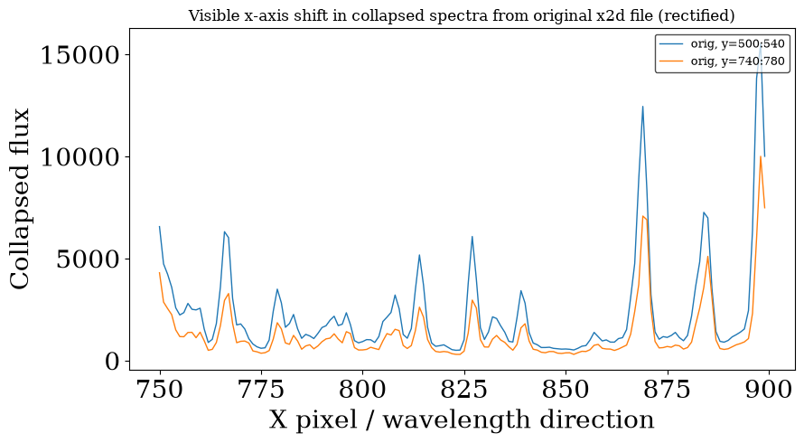
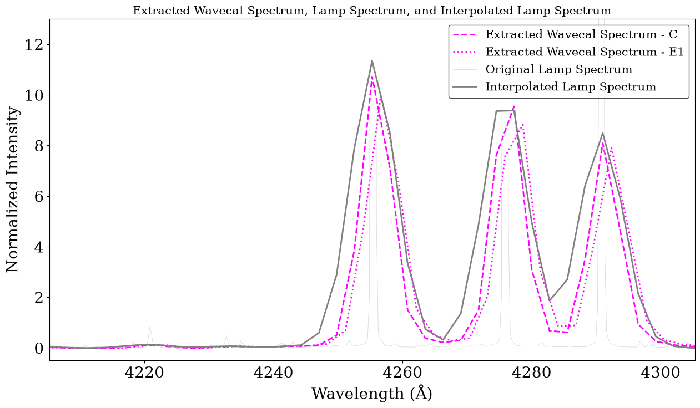
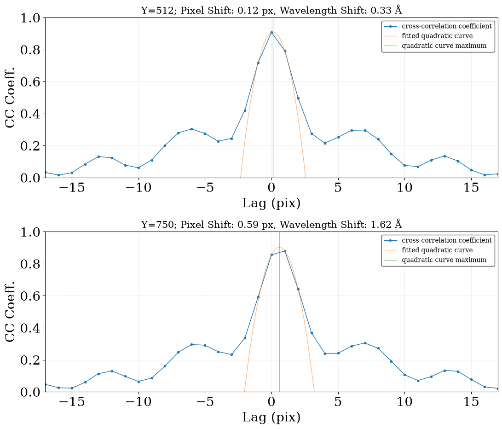
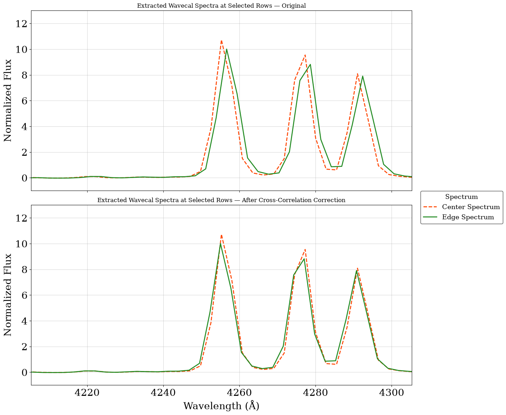
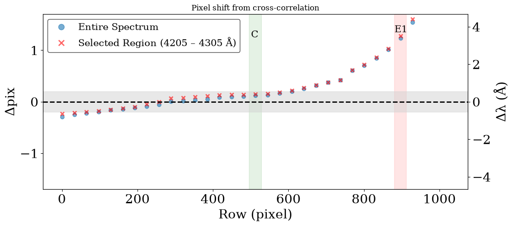
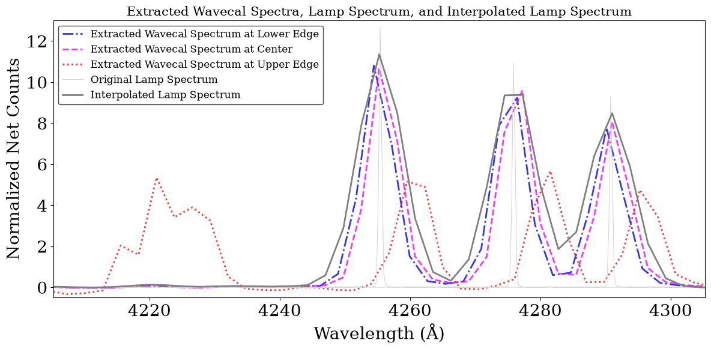
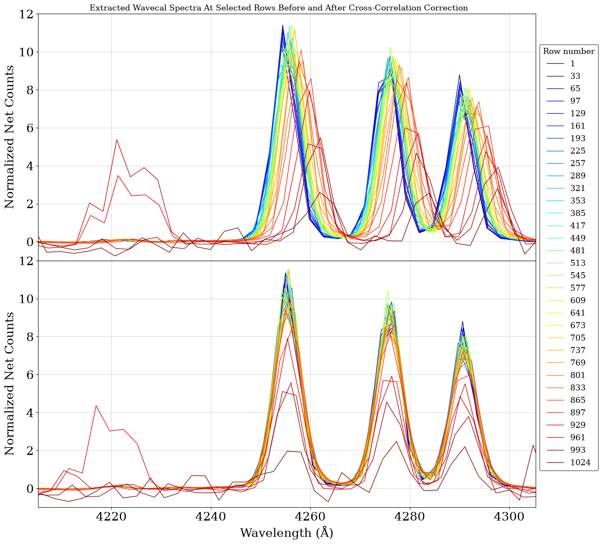
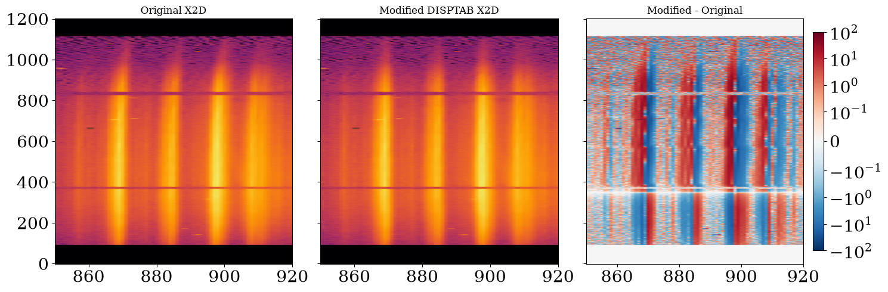
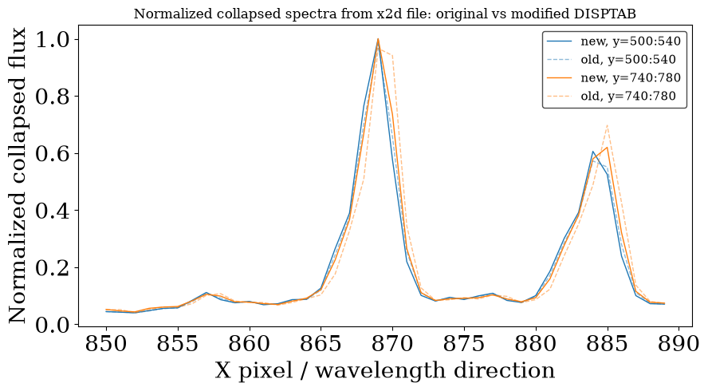

Improving Wavelength Calibration Accuracy Across the CCD#
Learning Goals#
The wavelength calibration accuracy of STIS CCD spectra is stable at the detector center, while significant offsets are present toward the CCD top and bottom edges and increase with time, as suggested in recent works: STIS ISR 2026-03 and STIS ISR 2026-04.
An update to CalSTIS has now been implemented to apply row-selected wavecal processing for observations taken with the E1/E2 pseudo-apertures, while preserving the standard procedure for nominal extractions, as explained in the May 2026 STAN.
However, the updated pipeline improves the wavelength calibration only for spectra extracted at the E1/E2 positions. Spectra extracted at other locations on the CCD other than E1/E2 or the center — for example when using POS-TARG offsets or when analyzing extended sources — may still require additional wavelength-shift corrections before scientific interpretation. For many G230MB E1 datasets, and for a few G230LB and G430M E1 datasets, the new wavelength calibration procedure returns incorrect SHIFTA1 (i.e., the dispersion-axis shift) values. This is due to a combination of low S/N and spurious features in the extracted wavecal spectra, which can affect the cross-correlation. This notebook illustrates a cross-correlation procedure that can be used to derive proper dispersion corrections in these cases.
In particular, you will learn how to perform row-selected cross-correlation on wavecal files to improve the wavelength calibration of spectra extracted at positions other than the nominal center or the E1/E2 pseudo-apertures, or in cases where the wavelength calibration fails. This will allow you to calculate the xoffset value(s) to use when extracting the science target spectra.
As an optional step, you will also learn how to manipulate and update the DISPTAB reference file for your specific datasets, in order to create correct 2D Spectral Images.
Table of Contents:
Import Packages#
# Import for: Managing system variables and file paths
import os
import shutil
from pathlib import Path
import stat
# Import for: Downloading necessary files
# (Not necessary if you choose to collect data from MAST)
from astroquery.mast import Observations
# Import for: Reading FITS files
from astropy.io import fits
from astropy.table import Table
# Import for: Calculation and Data Analysis
import numpy as np
# Import for: Aggregating and displaying tabulated data
import pandas as pd
# Import for: Smoothing data
from scipy.ndimage import gaussian_filter1d
# Import for: Model Fitting
from astropy.modeling import fitting
from astropy.modeling.models import Polynomial1D
# Import for: Performing cross-correlatoin
from scipy.signal import correlate
from scipy.signal import correlation_lags
# Import for: Operations on STIS Data
import stistools
# Import for: Plotting
import matplotlib
import matplotlib.pyplot as plt
from matplotlib.pyplot import cm
/home/runner/micromamba/envs/ci-env/lib/python3.12/site-packages/stsci/tools/nmpfit.py:8: UserWarning: NMPFIT is deprecated - stsci.tools v 3.5 is the last version to contain it.
warnings.warn("NMPFIT is deprecated - stsci.tools v 3.5 is the last version to contain it.")
/home/runner/micromamba/envs/ci-env/lib/python3.12/site-packages/stsci/tools/gfit.py:18: UserWarning: GFIT is deprecated - stsci.tools v 3.4.12 is the last version to contain it.Use astropy.modeling instead.
warnings.warn("GFIT is deprecated - stsci.tools v 3.4.12 is the last version to contain it."
The following tasks in the stistools package can be run with TEAL:
basic2d calstis ocrreject wavecal x1d x2d
# Gaussian full-width at half-max:
FWHM = 2 * np.sqrt(2 * np.log(2)) # ≈ 2.355
Configure Matplotlib Default Plotting Parameters#
plt.rcParams['figure.figsize'] = (10, 15)
plt.rcParams['image.origin'] = 'lower'
plt.rcParams['lines.linewidth'] = 1
plt.rcParams['axes.titlesize'] = 'large'
plt.rcParams['axes.labelsize'] = 20
plt.rcParams['xtick.labelsize'] = 20
plt.rcParams['ytick.labelsize'] = 20
plt.rcParams['font.family'] = 'serif'
plt.rcParams['legend.facecolor'] = 'white'
plt.rcParams['legend.edgecolor'] = 'black'
plt.rcParams['legend.framealpha'] = 0.7
plt.rcParams['legend.fontsize'] = 15
plt.rcParams['legend.loc'] = 'upper right'
plt.rcParams['legend.frameon'] = True
plt.rcParams['legend.fancybox'] = True
plt.rcParams['legend.shadow'] = False
plt.rcParams['legend.numpoints'] = 1
Download Data#
In this section, users should download the STIS datasets needed for their analysis from MAST.
This notebook uses the wavecal file for one G430L/c4300 dataset as an example, but the same procedure applies to all first-order gratings. Users can adapt the workflow by providing the appropriate obsid for their observations to download the corresponding wavecal file.
For G230MB data and a subset of G230LB and G430M, caution is required: wavecal spectra extracted near the CCD edges may have low signal-to-noise and few emission lines, which can affect the reliability of the cross-correlation offsets. This notebook can still be used to derive the offset at different detector positions and find the most appropriate correction.
# Path to the directory where you want to save the downloaded files and the results of the analysis
mypath = Path.cwd()
mypath
PosixPath('/home/runner/work/hst_notebooks/hst_notebooks/notebooks/STIS/e1_notebook')
# Modify this for your specific dataset (lower or upper case)
# These are a subset of tested datasets - here we look only at the wavecal files
obsid = 'oec63w010' # g430l
# obsid = 'OFAJ23010' # g430l
# obsid = 'OF8Q14010' # g750l
# obsid = 'ODYH220D0' # g750m
# obsid = 'o6ih10060' # g430l
# obsid = 'OE3G010D0' # g430m
# obsid = 'ofhcm1030' # g230mb
# obsid = 'OF8B02020' # g230lb
# Search dataset with the given obsid
obs_table = Observations.query_criteria(obs_id=obsid)
# Get a list of files assiciated with that target
products = Observations.get_product_list(obs_table)
# Filter product types to only wavecal files:
products = products[products['productSubGroupDescription'].filled() == 'WAV']
# Download FITS files
result = Observations.download_products(products, download_dir=mypath)
result
INFO: Found cached file /home/runner/work/hst_notebooks/hst_notebooks/notebooks/STIS/e1_notebook/mastDownload/HST/oec63w010/oec63w010_wav.fits with expected size 2260800. [astroquery.query]
| Local Path | Status | Message | URL |
|---|---|---|---|
| str118 | str8 | object | object |
| /home/runner/work/hst_notebooks/hst_notebooks/notebooks/STIS/e1_notebook/mastDownload/HST/oec63w010/oec63w010_wav.fits | COMPLETE | None | None |
Copy wavecal observations to dedicated directory:
def copy_files(source_file, destination_path):
"""Copy file to the destination path.
Construct the destination path by joining the destination directory and the base
name of the source file.
"""
destination_file = os.path.join(destination_path, os.path.basename(source_file))
shutil.copy(source_file, destination_file)
print(f"File copied: {source_file} to {destination_file}")
Locate our wavecal:
wavfile = mypath / 'mastDownload' / 'HST' / obsid / f'{obsid}_wav.fits'
wavfile
PosixPath('/home/runner/work/hst_notebooks/hst_notebooks/notebooks/STIS/e1_notebook/mastDownload/HST/oec63w010/oec63w010_wav.fits')
copy_files(wavfile, destination_path=mypath)
File copied: /home/runner/work/hst_notebooks/hst_notebooks/notebooks/STIS/e1_notebook/mastDownload/HST/oec63w010/oec63w010_wav.fits to /home/runner/work/hst_notebooks/hst_notebooks/notebooks/STIS/e1_notebook/oec63w010_wav.fits
Explore Wavecal Data
wavfile = mypath / f'{obsid}_wav.fits'
hdr0 = fits.getheader(wavfile, ext=0)
print(f"target = {hdr0['TARGNAME']}")
print(f"aperture = {hdr0['PROPAPER']}")
print(f"grating = {hdr0['OPT_ELEM']}")
print(f"cenwave = {hdr0['CENWAVE']}")
print(f"lamp = {hdr0['SCLAMP']}")
print(f"date = {hdr0['TDATEOBS']}")
grating = hdr0['OPT_ELEM']
cenwave = hdr0['CENWAVE']
lamp = hdr0['SCLAMP']
target = WAVELINE
aperture = 52X0.1E1
grating = G430L
cenwave = 4300
lamp = LINE
date = 2020-12-12
Next, use the Calibration Reference Data System (CRDS) command line tools to update and download the reference files.
https://hst-crds.stsci.edu/
https://hst-crds.stsci.edu/docs/cmdline_bestrefs/
crds_path = os.path.expanduser("~") + "/crds_cache"
os.environ["CRDS_PATH"] = crds_path
os.environ["CRDS_SERVER_URL"] = "https://hst-crds.stsci.edu"
os.environ["oref"] = os.path.join(crds_path, "references/hst/oref/")
!crds bestrefs --update-bestrefs --sync-references=1 --files {obsid}_wav.fits
CRDS - INFO - No comparison context or source comparison requested.
CRDS - INFO - ===> Processing oec63w010_wav.fits
CRDS - INFO - 0 errors
CRDS - INFO - 0 warnings
CRDS - INFO - 2 infos
rawfile = f"{obsid}_wav.fits"
with fits.open(rawfile) as hdul:
hdr = hdul[0].header
ref_keys = [
"BIASFILE", "DARKFILE", "PFLTFILE", "LFLTFILE",
"APERTAB", "SPTRCTAB", "DISPTAB", "INANGTAB", "LAMPTAB"
]
oref = os.environ["oref"]
for key in ref_keys:
val = hdr.get(key)
if val is None or val == "N/A":
print(f"{key:8s} = {val}")
continue
if val.startswith("oref$"):
path = val.replace("oref$", oref)
else:
path = val
print(f"{key:8s} = {val:25s} exists={os.path.exists(path)}")
if not os.path.exists(path):
print(" missing path:", path)
BIASFILE = oref$5162002no_bia.fits exists=True
DARKFILE = oref$5162002do_drk.fits exists=True
PFLTFILE = oref$x6417094o_pfl.fits exists=True
LFLTFILE = oref$pcc2026jo_lfl.fits exists=True
APERTAB = oref$y2r1559to_apt.fits exists=True
SPTRCTAB = oref$qa31608go_1dt.fits exists=True
DISPTAB = oref$l2j0137to_dsp.fits exists=True
INANGTAB = oref$h5s11397o_iac.fits exists=True
LAMPTAB = oref$l421050oo_lmp.fits exists=True
Calibrate Wavecals#
The function below calibrates the wavecal data as if they were science data.
In particular, CalSTIS ≥3.5.0 reads the PROPAPER keyword of the science raw file header for the wavelength calibration step to determine whether the E1/E2 wavelength-calibration optimization should be applied. Since here we want to derive wavelength corrections directly from the wavecal files at arbitrary CCD positions, we set PROPAPER to the nominal value so that the files are treated as nominal-center observations by CalSTIS.
def calibrate(wavefile, verbose=False):
"""Calibrate wavecal exposure as a science expsoure.
1. First, copy the _wav.fits file to _raw.fits to be used as a rawfile for wavecals.
2. Then, change the header keywords of the _raw file so that CalSTIS will extract it as science.
3. For this exercise, we also need to change the PROPAPER keyword to make sure that the wavecal
is not processed as a science file taken at E1 (new CalSTIS ≥3.5.0 checks PROPAPER keyword in
science data and here we are treating the wavecal as science).
4. Lastly, run CalSTIS.
Parameters:
-----------
rawfile : str
full path to the raw fits file
verbose : bool
print calstis stdout, default=False
"""
wavefile = str(wavefile) # allow pathlib.Path input types
rawfile = wavefile.replace('_wav.fits', '_raw.fits')
shutil.copy(wavefile, rawfile)
# Set header keywords to process as science
with fits.open(rawfile, mode='update') as f:
f[0].header['WAVECAL'] = os.path.basename(wavefile)
f[0].header['FLUXCORR'] = 'OMIT'
f[0].header['WAVECORR'] = 'PERFORM'
# Remove 'E1' if it is in PROPAPER:
f[0].header['PROPAPER'] = f[0].header['PROPAPER'].replace('E1', '')
f[1].header['ASN_MTYP'] = 'SCIENCE'
# Redirect standard out text:
trailer = '' if verbose else '/dev/null'
res = stistools.calstis.calstis(rawfile, trailer=trailer)
assert res == 0, 'calstis errored in call to "calibrate()"'
calibrate(wavfile)
This step provides us with a wavelength-calibrated wavecal file.
Move input and product files to tidy up:
# Make a destination directory if it does not yet exist:
wavecal_calibrated = mypath / 'wavecal_calibrated'
wavecal_calibrated.mkdir(parents=True, exist_ok=True)
# move files to destination
for filetype in ['flt', 'wav', 'raw', 'x2d']:
for filename in mypath.glob(f"{obsid}_{filetype}.fits"):
print(f"Moving {filename}")
os.replace(filename, os.path.join(wavecal_calibrated, os.path.basename(filename)))
Moving /home/runner/work/hst_notebooks/hst_notebooks/notebooks/STIS/e1_notebook/oec63w010_flt.fits
Moving /home/runner/work/hst_notebooks/hst_notebooks/notebooks/STIS/e1_notebook/oec63w010_wav.fits
Moving /home/runner/work/hst_notebooks/hst_notebooks/notebooks/STIS/e1_notebook/oec63w010_raw.fits
Moving /home/runner/work/hst_notebooks/hst_notebooks/notebooks/STIS/e1_notebook/oec63w010_x2d.fits
The plot below shows how in the X1D file obtained with the pipeline a spectrum at the edge is shifted with respect to a spectrum extracted at the center.
x2_orig = fits.getdata(wavecal_calibrated / f"{obsid}_x2d.fits", ext=1)
xrange = slice(750, 900)
yranges = [
slice(500, 540),
slice(740, 780),
]
x = np.arange(x2_orig.shape[1])[xrange]
fig, ax = plt.subplots(figsize=(9, 5))
for yrange in yranges:
prof = np.nansum(x2_orig[yrange, xrange], axis=0)
line, = ax.plot(
x,
prof,
label=f'orig, y={yrange.start}:{yrange.stop}'
)
ax.set_xlabel('X pixel / wavelength direction')
ax.set_ylabel('Collapsed flux')
ax.set_title('Visible x-axis shift in collapsed spectra from original x2d file (rectified)')
ax.legend(fontsize=9)
fig.tight_layout()
plt.savefig(mypath / f'x2d_collapsed_spectra_orig_{grating}_{cenwave}_{lamp}.png', dpi=300)

Extract spectra at desired Y-location and calculate correction factors#
The functions below use stistools.x1d.x1d to extract spectra from the calibrated wavecal flt files.
See details about x1d here:
https://spacetelescope.github.io/hst_notebooks/notebooks/STIS/extraction/1D_Extraction.html
The workflow is:
Extract a reference spectrum at the nominal position (center = 512)
For compact sources, extract a spectrum at the source position on the CCD
For extended sources, extract spectra at multiple positions across the CCD
def extract(fltname, center, size, xoffset=0, verbose=False):
"""Use the x1d task to extract the final spectrum.
Extraction of spectra, centered at column "center" (1-indexed),
with extraction box of size "size".
Parameters
----------
fltname : str or pathlib.Path
full path to the flt FITS file
center : float
extraction Y-location (1-indexed) for mid-detector X-location
size : int
extraction size in pixels
xoffset : float
offset in X
Returns
-------
str : output filename
"""
# Put additional string into output filename if an xoffset is specified:
corr = '' if (xoffset == 0) else '_corr'
fltname = str(fltname) # allow pathlib.Path input types
rootname = os.path.basename(fltname).replace('_flt.fits', '')
outname = f"{rootname}{corr}_{center!s}_x1d.fits"
# Redirect standard out text:
trailer = '' if verbose else '/dev/null'
if np.abs(xoffset) < 10:
xoffset = xoffset
else:
xoffset = 0
res = stistools.x1d.x1d(
fltname,
backcorr="omit",
ctecorr="omit",
dispcorr="perform",
helcorr="omit",
fluxcorr="omit",
a2center=center,
maxsrch=0,
extrsize=size,
xoffset=xoffset,
output=outname,
trailer=trailer)
print(res)
assert res == 0, 'stistools.x1d.x1d() returned an error'
return outname
Example #1: Compact source at a position other than center and E1/E2#
In the example below, spectra are extracted at the nominal center (512) and slightly below the E1 position (E1~900; here we extract at 750).
The value 750 can be replaced with any other CCD position corresponding to the location where you want to extract your source.
fltfile = wavecal_calibrated / f"{obsid}_flt.fits"
extract(fltfile, 512, size=40)
extract(fltfile, 750, size=40)
0
0
'oec63w010_750_x1d.fits'
# Make a destination directory if it does not yet exist:
wavecal_extracted = mypath / 'wavecal_extracted'
wavecal_extracted.mkdir(parents=True, exist_ok=True)
for filename in mypath.glob(f"{obsid}_*_x1d.fits"):
os.replace(filename, os.path.join(wavecal_extracted, os.path.basename(filename)))
Here we compare the spectra extracted from the wavecal file to the lamp template to perform a cross-correlation and derive the wavelength offset.
Read wavecal spectra and print some statistics:#
# Data at position 512:
wlspec_C = wavecal_extracted / f"{obsid}_512_x1d.fits"
with fits.open(wlspec_C) as f:
wl_wlspec_C = f[1].data['WAVELENGTH'][0]
flux_wlspec_C = f[1].data['NET'][0]
wl_mean_plate_scale_C = (wl_wlspec_C[1:] - wl_wlspec_C[:-1]).mean()
print('\nAt Y=512:')
minwl, maxwl = np.nanmin(wl_wlspec_C), np.nanmax(wl_wlspec_C)
print(f"Wavelength range of data: {minwl:.0f} - {maxwl:.0f} Å")
print(f"Mean plate scale: {wl_mean_plate_scale_C:.5f} Å/pix")
# Data at position 750:
wlspec_E = wavecal_extracted / f"{obsid}_750_x1d.fits"
with fits.open(wlspec_E) as f:
wl_wlspec_E = f[1].data['WAVELENGTH'][0] # index at order 0 (only first-order is present here)
flux_wlspec_E = f[1].data['NET'][0]
wl_mean_plate_scale_E = (wl_wlspec_E[1:] - wl_wlspec_E[:-1]).mean()
print('\nAt Y=750:')
print(f"Wavelength range of data: {np.nanmin(wl_wlspec_E):.0f} - {np.nanmax(wl_wlspec_E):.0f} Å")
print(f"Mean plate scale: {wl_mean_plate_scale_E:.5f} Å/pix")
At Y=512:
Wavelength range of data: 2898 - 5707 Å
Mean plate scale: 2.74645 Å/pix
At Y=750:
Wavelength range of data: 2894 - 5703 Å
Mean plate scale: 2.74604 Å/pix
Read Lamp Reference File#
The lamp reference file should be downloaded and added in folder from here:
https://hst-crds.stsci.edu/unchecked_get/references/hst/l421050oo_lmp.fits
This spectrum is the one used as reference for the wavelength calibration. Here we will degrade it to the spectra resolution of our wavecal spectra and interpolate it on the same x-range, before performing the cross-correlation.
Read lamptab file and select the same wavelength range as wavecal data:
lamp_ref = Table.read(os.path.join(crds_path, 'references/hst/stis/', 'l421050oo_lmp.fits'))
# Keep only the SCLAMP='ANY' row, discarding the 'PRISM' row:
lamp_ref = lamp_ref[[x.strip() == 'ANY' for x in lamp_ref['SCLAMP']]]
lamp_ref
| SCLAMP | LAMPSET | OPT_ELEM | NELEM | WAVELENGTH | FLUX | PEDIGREE | DESCRIP |
|---|---|---|---|---|---|---|---|
| mA | Angstroms | counts | |||||
| bytes6 | bytes6 | bytes8 | int32 | float64[300000] | float32[300000] | bytes67 | bytes67 |
| ANY | ANY | ANY | 256814 | 1131.82 .. 0 | 0.166667 .. 0 | GROUND | Ground Cal for non-PRISM, PT lamp 10 mA |
wl_lamp = lamp_ref['WAVELENGTH'][0].data
flux_lamp = lamp_ref['FLUX'][0].data
# Trim the lamp wavelengths down to the wavecal's range:
w = (wl_lamp > minwl) & (wl_lamp < maxwl)
lamp_wl_sel = wl_lamp[w]
lamp_flux_sel = flux_lamp[w]
mean_plate_scale_lamp_sel = (lamp_wl_sel[1:] - lamp_wl_sel[:-1]).mean()
print(f"Lamp Mean Plate Scale Lamp: {mean_plate_scale_lamp_sel:.5f}")
Lamp Mean Plate Scale Lamp: 0.09527
Degrade Lamp Spectrum to wavecal data spectral resolution:
# Degrade to E1 resolution
degraded_lamp_flux_E = gaussian_filter1d(lamp_flux_sel, wl_mean_plate_scale_E / FWHM / mean_plate_scale_lamp_sel)
# Degrade to C resolution
degraded_lamp_flux_C = gaussian_filter1d(lamp_flux_sel, wl_mean_plate_scale_C / FWHM / mean_plate_scale_lamp_sel)
print(f"Degradation kernel sigma for E1: {wl_mean_plate_scale_E / FWHM / mean_plate_scale_lamp_sel:.2f} pixels")
print(f"Degradation kernel sigma for C: {wl_mean_plate_scale_C / FWHM / mean_plate_scale_lamp_sel:.2f} pixels")
Degradation kernel sigma for E1: 12.24 pixels
Degradation kernel sigma for C: 12.24 pixels
Interpolate degraded lamp spectrum to wavelength points in the wavecal data:
flux_lamp_interp_E = np.interp(wl_wlspec_E, lamp_wl_sel, degraded_lamp_flux_E)
flux_lamp_interp_C = np.interp(wl_wlspec_C, lamp_wl_sel, degraded_lamp_flux_C)
Plot normalized spectra to compare between wavecal spectrum extracted at detector center and lamp spectrum:
# Normalize spectra
flux_C_norm = (flux_wlspec_C - np.nanmedian(flux_wlspec_C)) / np.nanstd(flux_wlspec_C)
flux_E_norm = (flux_wlspec_E - np.nanmedian(flux_wlspec_E)) / np.nanstd(flux_wlspec_E)
lamp_orig_norm = (lamp_flux_sel - np.nanmedian(lamp_flux_sel)) / np.nanstd(lamp_flux_sel)
lamp_interp_norm = (flux_lamp_interp_C - np.nanmedian(flux_lamp_interp_C)) / np.nanstd(flux_lamp_interp_C)
# Find peak from interpolated lamp spectrum
ipeak = np.nanargmax(lamp_interp_norm)
wl_peak = wl_wlspec_C[ipeak]
# Define wavelength range
dw = 50 # Angstrom
wl_min = wl_peak - dw
wl_max = wl_peak + dw
plt.figure(figsize=(15, 8))
plt.plot(
wl_wlspec_C,
flux_C_norm,
color='magenta', lw=2, linestyle='dashed',
label='Extracted Wavecal Spectrum - C'
)
plt.plot(
wl_wlspec_E,
flux_E_norm,
color='magenta', lw=2, linestyle='dotted',
label='Extracted Wavecal Spectrum - E1')
plt.plot(
lamp_wl_sel,
lamp_orig_norm,
color='lightgray', lw=0.5,
label='Original Lamp Spectrum'
)
plt.plot(
wl_wlspec_C,
lamp_interp_norm,
color='gray', lw=2,
label='Interpolated Lamp Spectrum'
)
plt.xlim(wl_min, wl_max)
plt.ylim(-0.5, 13)
plt.title(
'Extracted Wavecal Spectrum, Lamp Spectrum, and Interpolated Lamp Spectrum',
size=15
)
plt.legend()
plt.xlabel('Wavelength (Å)')
plt.ylabel('Normalized Intensity')
plt.savefig(
mypath / f'extracted_wavecal_spectra_and_lamp_{grating}_{cenwave}_{lamp}.png',
dpi=300,
bbox_inches='tight'
)
plt.show()

The plot above shows that the wavecal extracted at the center of the detector and the lamp template are well aligned, as expected for the nominal position.
However, there is a clear wavelength shift between the degraded lamp template and the extracted spectrum.
Cross-correlation with Lamp Template To Determine Proper Shifts to Fix Offsets#
The cross-correlation function cross_correlate is taken from cross-correlation notebook here: https://github.com/spacetelescope/STIS-Notebooks
Lag and Cross-Correlation Coefficient
The lag is the displacement (in pixels) in the lagged spectrum. If the lag is 0, the spectra are aligned and not shifted.
The cross-correlation coefficient encodes how similar two spectra are. The cross-correlation coefficient takes values from -1 to 1: if it’s positive, the 2 spectra are positively correlated; if it’s negative, the 2 spectra are anti-correlated.
The cross-correlation algorithm shifts one of the input spectra according the the lag values and computes the cross-correlation coefficient for each lag. Then we take the sub-pixel-shift lag with the maximum cross-correlation coefficient and compute the corresponding displacement in wavelength space.
Normalization of the input spectra is required to ensure the cross-correlation coefficient is in the [-1, 1] range.
def cross_correlate(shifted_flux, ref_flux):
'''Evaluate the cross-correlation of two arrays vs shift.
'''
if len(shifted_flux) != len(ref_flux):
raise ValueError('Arrays must be same size')
# normalize inputs
shifted_flux = shifted_flux - shifted_flux.mean()
shifted_flux /= shifted_flux.std()
ref_flux = ref_flux - ref_flux.mean()
ref_flux /= ref_flux.std()
# centered at the median of len(a)
lag = correlation_lags(len(shifted_flux), len(ref_flux), mode="same")
# find the cross-correlation coefficient
cc = correlate(shifted_flux, ref_flux, mode="same") / float(len(ref_flux))
return lag, cc
def apply_crosscorr(shifted_flux, ref_flux, mean_plate_scale, plot=True, ax=None, note=''):
'''Calculate the cross-correlation between two arrays and fit the peak.
'''
# cross-correlate inputs
lag, cc = cross_correlate(shifted_flux, ref_flux)
# fit a quadratic near the peak to find the pixel shift
fitter = fitting.LinearLSQFitter()
# get the 3 points nearest the peak
width = 3
low, hi = np.argmax(cc) - width // 2, np.argmax(cc) + width // 2 + 1
fit = fitter(Polynomial1D(degree=2), x=lag[low:hi], y=cc[low:hi])
x_c = np.arange(-5, 5, 0.01)
shift_px = -fit.parameters[1] / (2. * fit.parameters[2]) # pixels
shift_wl = shift_px * mean_plate_scale # Å
if plot:
if ax is None:
fig, ax = plt.subplots(nrows=1, ncols=1)
fig.set_size_inches(12, 5)
fig.tight_layout()
fig.subplots_adjust(wspace=0.2, hspace=0.1, top=0.88)
ax.plot(lag, cc, ".-", label="cross-correlation coefficient")
ax.plot(x_c, fit(x_c), alpha=0.5, label="fitted quadratic curve")
ax.plot([shift_px, shift_px], [0, 1], alpha=0.5, label="quadratic curve maximum")
ax.set_ylabel("CC Coeff.")
ax.set_ylim(0, 1)
ax.set_xlim(-17, 17)
ax.grid(True, alpha=0.2)
note += '; ' if note else ''
ax.set_title(f"{note}Pixel Shift: {shift_px:.2f} px, Wavelength Shift: {shift_wl:.2f} Å", size=15)
ax.legend(fontsize=10)
ax.axhline(0, linestyle='dashed', c='k', alpha=0.05)
ax.set_xlabel("Lag (pix)")
plt.savefig(mypath / f'cross_correlation_{note.replace("; ", "")}_{grating}_{cenwave}_{lamp}.png', dpi=300)
return (shift_px, shift_wl)
Apply cross-correlation between the lamp template and the two spectra extracted at center and other location to retrieve shift in pixels and in Angstroms.
fig, axes = plt.subplots(2, 1)
fig.set_size_inches(12, 5*len(axes))
fig.tight_layout(pad=5.0)
shift_px_C, shift_wl_C = apply_crosscorr(
flux_wlspec_C[5:-5], flux_lamp_interp_C[5:-5], wl_mean_plate_scale_C,
plot=True, ax=axes[0], note='Y=512')
shift_px_E, shift_wl_E = apply_crosscorr(
flux_wlspec_E[5:-5], flux_lamp_interp_E[5:-5], wl_mean_plate_scale_E,
plot=True, ax=axes[1], note='Y=750')

If the derived shift is unusually large (i.e., several pixels) and the plot above does not show a good fit, the cross-correlation likely failed.
This can happen if the extracted wavecal spectrum at a given position has insufficient S/N, or if spurious features, such as cosmic-ray residuals, dominate the cross-correlation. In this case, users can try increasing the extraction size (this example uses EXTRSIZE = 40), choosing a slightly different A2CENTER (still close to the desired position), or selecting a wavelength subrange with clear emission lines while avoiding spurious features before repeating the cross-correlation.
print(f"Pixel Shift for Y=512: {shift_px_C:+5.2f} px, Wavelength Shift for Y=512: {shift_wl_C:+5.2f} Å")
print(f"Pixel Shift for Y=750: {shift_px_E:+5.2f} px, Wavelength Shift for Y=750: {shift_wl_E:+5.2f} Å")
Pixel Shift for Y=512: +0.12 px, Wavelength Shift for Y=512: +0.33 Å
Pixel Shift for Y=750: +0.59 px, Wavelength Shift for Y=750: +1.62 Å
From the output shown above, the spectrum extracted at the detector center is already well aligned with the lamp template.
In contrast, the spectrum extracted near the detector edge shows a significant shift, exceeding the nominal wavelength calibration accuracy of about 0.2-0.3 pixels.
Apply correction to improve wavelength calibration accuracy#
This example is shown for the wavecal data, but the same procedure applies to the science spectrum extracted at the same position.
The pixel shift derived in the cross-correlation step is considered in the spectra extraction using the xoffset parameter.
outname = extract(fltfile, center=750, size=40, xoffset=shift_px_E, verbose=False)
outname
0
'oec63w010_corr_750_x1d.fits'
os.replace(mypath / outname, wavecal_extracted / outname)
Read new extracted spectrum:
# Data at position 750 corrected
wlspec_E_corr = wavecal_extracted / outname
with fits.open(wlspec_E_corr) as f:
wl_wlspec_E_corr = f[1].data['WAVELENGTH'][0]
flux_wlspec_E_corr = f[1].data['NET'][0]
Plot Cross-Correlation Corrected Edge Spectrum#
# Normalize spectra
flux_C_norm = (flux_wlspec_C - np.nanmedian(flux_wlspec_C)) / np.nanstd(flux_wlspec_C)
flux_E_norm = (flux_wlspec_E - np.nanmedian(flux_wlspec_E)) / np.nanstd(flux_wlspec_E)
flux_E_corr_norm = (flux_wlspec_E_corr - np.nanmedian(flux_wlspec_E_corr)) / np.nanstd(flux_wlspec_E_corr)
# Define automatic wavelength range
dw = 50 # Angstrom
wl_min = wl_peak - dw
wl_max = wl_peak + dw
fig, axes = plt.subplots(2, 1, sharex=True, sharey=True)
fig.set_size_inches(12, 6 * len(axes))
for ax in axes:
ax.plot(
wl_wlspec_C,
flux_C_norm,
color='orangered',
lw=2,
linestyle='dashed',
label='Center Spectrum'
)
axes[0].plot(
wl_wlspec_E,
flux_E_norm,
color='forestgreen',
lw=2,
linestyle='solid',
label='Edge Spectrum'
)
axes[1].plot(
wl_wlspec_E_corr,
flux_E_corr_norm,
color='forestgreen',
lw=2,
linestyle='solid',
label='Edge Spectrum - Corrected'
)
axes[1].set_xlabel('Wavelength (Å)')
axes[0].set_xlim(wl_min, wl_max)
axes[0].set_ylim(-1, 13)
for ax in axes:
ax.set_ylabel('Normalized Flux')
ax.grid(alpha=0.5)
handles, labels = axes[0].get_legend_handles_labels()
fig.legend(
handles,
labels,
loc='center left',
bbox_to_anchor=(1.0, 0.5),
title='Spectrum',
fontsize=14,
title_fontsize=14
)
axes[0].set_title('Extracted Wavecal Spectra at Selected Rows — Original')
axes[1].set_title('Extracted Wavecal Spectra at Selected Rows — After Cross-Correlation Correction')
fig.tight_layout()
plt.savefig(
mypath / f'extracted_wavecal_spectra_before_after_cross_corr_{grating}_{cenwave}_{lamp}.png',
dpi=300,
bbox_inches='tight'
)
plt.show()

As shown in the bottom panel, applying the xoffset parameter during the extraction step brings the spectrum extracted near the edge of the CCD into agreement with the spectrum extracted at the detector center.
This example illustrates how to derive the required xoffset value (in pixels). Users can then re-extract their science spectra from the corresponding FLT or CRJ files at the desired detector position by providing the appropriate xoffset in the extraction step.
Example #2: Extended Source Across CCD Detector#
In this case, we likely need to extract multiple spectra at different positions across the CCD.
To do this, we extract spectra from the wavecal FLT file at 33 different positions corresponding to the A2CENTER locations defined in the STIS reference files. Users can change the list_center array here below with alternate values.
# a2center is defined at these Y-positions in the DSP table:
list_centers = np.array([
1, 33, 65, 97, 129, 161, 193, 225, 257, 289, 321,
353, 385, 417, 449, 481, 513, 545, 577, 609, 641, 673,
705, 737, 769, 801, 833, 865, 897, 929, 961, 993, 1024,])
len(list_centers)
33
fltfile = wavecal_calibrated / f"{obsid}_flt.fits"
fltfile
PosixPath('/home/runner/work/hst_notebooks/hst_notebooks/notebooks/STIS/e1_notebook/wavecal_calibrated/oec63w010_flt.fits')
for list_center in list_centers:
extract(fltfile, list_center, size=40)
0
0
0
0
0
0
0
0
0
0
0
0
0
0
0
0
0
0
0
0
0
0
0
0
0
0
0
0
0
0
0
0
0
# Make a destination directory if it does not yet exist:
wavecal_extracted_extended_source = mypath / 'wavecal_extracted_extended_source'
wavecal_extracted_extended_source.mkdir(parents=True, exist_ok=True)
# move to destination directory
for filename in mypath.glob(f"{obsid}_*_x1d.fits"):
os.replace(filename, os.path.join(wavecal_extracted_extended_source, os.path.basename(filename)))
Wavecal and Lamp Files#
As for case #1, here we compare the spectra extracted from the wavecal file with the lamp template to perform a cross-correlation and derive the wavelength offset to be applied to the science data.
Read the wavecal spectra to determine the mean plate scale vs Y:
df = pd.DataFrame(data={'list_center': list_centers, 'wlspec': '', 'Min Wl': -1., 'Max Wl': -1.})
for i, row in df.iterrows():
df.loc[i, 'wlspec'] = f"{obsid}_{row['list_center']}_x1d.fits"
wlspec = wavecal_extracted_extended_source / df.loc[i, 'wlspec']
with fits.open(wlspec) as f:
wl_wlspec = f[1].data['WAVELENGTH'].squeeze()
flux_wlspec = f[1].data['NET'].squeeze()
fluxerr_wlspec = f[1].data['NET_ERROR'].squeeze()
df.loc[i, 'Min Wl'] = np.nanmin(wl_wlspec)
df.loc[i, 'Max Wl'] = np.nanmax(wl_wlspec)
df.loc[i, 'Mean Plate Scale'] = (wl_wlspec[1:] - wl_wlspec[0:-1]).mean()
df
| list_center | wlspec | Min Wl | Max Wl | Mean Plate Scale | |
|---|---|---|---|---|---|
| 0 | 1 | oec63w010_1_x1d.fits | 2904.097022 | 5710.387668 | 2.743197 |
| 1 | 33 | oec63w010_33_x1d.fits | 2904.059407 | 5710.726926 | 2.743566 |
| 2 | 65 | oec63w010_65_x1d.fits | 2903.951478 | 5710.973401 | 2.743912 |
| 3 | 97 | oec63w010_97_x1d.fits | 2903.777875 | 5711.131711 | 2.744236 |
| 4 | 129 | oec63w010_129_x1d.fits | 2903.543246 | 5711.206487 | 2.744539 |
| 5 | 161 | oec63w010_161_x1d.fits | 2903.252240 | 5711.202363 | 2.744819 |
| 6 | 193 | oec63w010_193_x1d.fits | 2902.909513 | 5711.123981 | 2.745078 |
| 7 | 225 | oec63w010_225_x1d.fits | 2902.519725 | 5710.975987 | 2.745314 |
| 8 | 257 | oec63w010_257_x1d.fits | 2902.087539 | 5710.763035 | 2.745528 |
| 9 | 289 | oec63w010_289_x1d.fits | 2901.617622 | 5710.489781 | 2.745721 |
| 10 | 321 | oec63w010_321_x1d.fits | 2901.114644 | 5710.160889 | 2.745891 |
| 11 | 353 | oec63w010_353_x1d.fits | 2900.583278 | 5709.781025 | 2.746039 |
| 12 | 385 | oec63w010_385_x1d.fits | 2900.028200 | 5709.354858 | 2.746165 |
| 13 | 417 | oec63w010_417_x1d.fits | 2899.454088 | 5708.887061 | 2.746269 |
| 14 | 449 | oec63w010_449_x1d.fits | 2898.865623 | 5708.382310 | 2.746351 |
| 15 | 481 | oec63w010_481_x1d.fits | 2898.267486 | 5707.845281 | 2.746410 |
| 16 | 513 | oec63w010_513_x1d.fits | 2897.664362 | 5707.280656 | 2.746448 |
| 17 | 545 | oec63w010_545_x1d.fits | 2897.060935 | 5706.693114 | 2.746464 |
| 18 | 577 | oec63w010_577_x1d.fits | 2896.461891 | 5706.087336 | 2.746457 |
| 19 | 609 | oec63w010_609_x1d.fits | 2895.871918 | 5705.468005 | 2.746428 |
| 20 | 641 | oec63w010_641_x1d.fits | 2895.295701 | 5704.839801 | 2.746377 |
| 21 | 673 | oec63w010_673_x1d.fits | 2894.737928 | 5704.207407 | 2.746304 |
| 22 | 705 | oec63w010_705_x1d.fits | 2894.203287 | 5703.575501 | 2.746209 |
| 23 | 737 | oec63w010_737_x1d.fits | 2893.696462 | 5702.948761 | 2.746092 |
| 24 | 769 | oec63w010_769_x1d.fits | 2893.222141 | 5702.331865 | 2.745953 |
| 25 | 801 | oec63w010_801_x1d.fits | 2892.785007 | 5701.729485 | 2.745791 |
| 26 | 833 | oec63w010_833_x1d.fits | 2892.389745 | 5701.146293 | 2.745608 |
| 27 | 865 | oec63w010_865_x1d.fits | 2892.041034 | 5700.586956 | 2.745402 |
| 28 | 897 | oec63w010_897_x1d.fits | 2891.743557 | 5700.056138 | 2.745174 |
| 29 | 929 | oec63w010_929_x1d.fits | 2891.501988 | 5699.558497 | 2.744923 |
| 30 | 961 | oec63w010_961_x1d.fits | 2891.321005 | 5699.098689 | 2.744651 |
| 31 | 993 | oec63w010_993_x1d.fits | 2891.205278 | 5698.681361 | 2.744356 |
| 32 | 1024 | oec63w010_1024_x1d.fits | 2891.159477 | 5698.311159 | 2.744039 |
Truncate the lamp spectrum range, degrade its resolution, and interpolate to the X1D file wavelength grid:
(Also perform a cross-correlation with a subset of the wavelengths to aid in the low-SNR regime - You can also inspect the lamp spectrum and decide an appropriate range.)
wmin_subset, wmax_subset = wl_min, wl_max
print(f'Sub-set wavelength range for cross-correlation: {wmin_subset:.0f} - {wmax_subset:.0f} Å')
Sub-set wavelength range for cross-correlation: 4205 - 4305 Å
for i, row in df.iterrows():
# Truncate LAMPTAB range to full wavecal range:
w = (wl_lamp > row['Min Wl']) & (wl_lamp < row['Max Wl'])
# Alternatively, truncate LAMPTAB range to a subset of the wavecal range:
# This is more robust to noisy lamp spectra and could improve the cross-correlation.
w_subset = (wl_wlspec > wmin_subset) & (wl_wlspec < wmax_subset)
lamp_wl_sel = wl_lamp[w]
degraded_lamp_flux = gaussian_filter1d(
flux_lamp[w],
row['Mean Plate Scale'] / FWHM / mean_plate_scale_lamp_sel)
with fits.open(wavecal_extracted_extended_source / row['wlspec']) as f:
# Interpolate to data wavelength grid:
flux_lamp_interp = np.interp(
f[1].data['WAVELENGTH'][0],
lamp_wl_sel,
degraded_lamp_flux)
# Run the cross-correlation on most of the wavelengths (except edges):
df.loc[i, 'shift_px'], df.loc[i, 'shift_wl'] = apply_crosscorr(
f[1].data['NET'][0][5:-5],
flux_lamp_interp[5:-5],
row['Mean Plate Scale'],
plot=False)
# Run the cross-correlation on a smaller subset of wavelengths:
df.loc[i, 'shift_px_subset'], df.loc[i, 'shift_wl_subset'] = apply_crosscorr(
f[1].data['NET'][0][w_subset],
flux_lamp_interp[w_subset],
row['Mean Plate Scale'],
plot=False)
df
| list_center | wlspec | Min Wl | Max Wl | Mean Plate Scale | shift_px | shift_wl | shift_px_subset | shift_wl_subset | |
|---|---|---|---|---|---|---|---|---|---|
| 0 | 1 | oec63w010_1_x1d.fits | 2904.097022 | 5710.387668 | 2.743197 | -0.298235 | -0.818116 | -0.229905 | -0.630674 |
| 1 | 33 | oec63w010_33_x1d.fits | 2904.059407 | 5710.726926 | 2.743566 | -0.249142 | -0.683536 | -0.211385 | -0.579947 |
| 2 | 65 | oec63w010_65_x1d.fits | 2903.951478 | 5710.973401 | 2.743912 | -0.223562 | -0.613433 | -0.197162 | -0.540995 |
| 3 | 97 | oec63w010_97_x1d.fits | 2903.777875 | 5711.131711 | 2.744236 | -0.197621 | -0.542318 | -0.175986 | -0.482947 |
| 4 | 129 | oec63w010_129_x1d.fits | 2903.543246 | 5711.206487 | 2.744539 | -0.160596 | -0.440761 | -0.151077 | -0.414636 |
| 5 | 161 | oec63w010_161_x1d.fits | 2903.252240 | 5711.202363 | 2.744819 | -0.148537 | -0.407708 | -0.130216 | -0.357418 |
| 6 | 193 | oec63w010_193_x1d.fits | 2902.909513 | 5711.123981 | 2.745078 | -0.121962 | -0.334796 | -0.095967 | -0.263436 |
| 7 | 225 | oec63w010_225_x1d.fits | 2902.519725 | 5710.975987 | 2.745314 | -0.094326 | -0.258955 | -0.049946 | -0.137116 |
| 8 | 257 | oec63w010_257_x1d.fits | 2902.087539 | 5710.763035 | 2.745528 | -0.055911 | -0.153505 | -0.003185 | -0.008744 |
| 9 | 289 | oec63w010_289_x1d.fits | 2901.617622 | 5710.489781 | 2.745721 | 0.008798 | 0.024157 | 0.068812 | 0.188939 |
| 10 | 321 | oec63w010_321_x1d.fits | 2901.114644 | 5710.160889 | 2.745891 | 0.015805 | 0.043399 | 0.077407 | 0.212552 |
| 11 | 353 | oec63w010_353_x1d.fits | 2900.583278 | 5709.781025 | 2.746039 | 0.036494 | 0.100215 | 0.096193 | 0.264151 |
| 12 | 385 | oec63w010_385_x1d.fits | 2900.028200 | 5709.354858 | 2.746165 | 0.053221 | 0.146154 | 0.109324 | 0.300222 |
| 13 | 417 | oec63w010_417_x1d.fits | 2899.454088 | 5708.887061 | 2.746269 | 0.081548 | 0.223952 | 0.129214 | 0.354855 |
| 14 | 449 | oec63w010_449_x1d.fits | 2898.865623 | 5708.382310 | 2.746351 | 0.093520 | 0.256838 | 0.135342 | 0.371698 |
| 15 | 481 | oec63w010_481_x1d.fits | 2898.267486 | 5707.845281 | 2.746410 | 0.107074 | 0.294068 | 0.142535 | 0.391459 |
| 16 | 513 | oec63w010_513_x1d.fits | 2897.664362 | 5707.280656 | 2.746448 | 0.121137 | 0.332695 | 0.150512 | 0.413375 |
| 17 | 545 | oec63w010_545_x1d.fits | 2897.060935 | 5706.693114 | 2.746464 | 0.131194 | 0.360319 | 0.153954 | 0.422828 |
| 18 | 577 | oec63w010_577_x1d.fits | 2896.461891 | 5706.087336 | 2.746457 | 0.168450 | 0.462642 | 0.186422 | 0.512000 |
| 19 | 609 | oec63w010_609_x1d.fits | 2895.871918 | 5705.468005 | 2.746428 | 0.203857 | 0.559879 | 0.219529 | 0.602920 |
| 20 | 641 | oec63w010_641_x1d.fits | 2895.295701 | 5704.839801 | 2.746377 | 0.255663 | 0.702148 | 0.268266 | 0.736759 |
| 21 | 673 | oec63w010_673_x1d.fits | 2894.737928 | 5704.207407 | 2.746304 | 0.310806 | 0.853568 | 0.322239 | 0.884967 |
| 22 | 705 | oec63w010_705_x1d.fits | 2894.203287 | 5703.575501 | 2.746209 | 0.378315 | 1.038933 | 0.380288 | 1.044349 |
| 23 | 737 | oec63w010_737_x1d.fits | 2893.696462 | 5702.948761 | 2.746092 | 0.418483 | 1.149193 | 0.421675 | 1.157959 |
| 24 | 769 | oec63w010_769_x1d.fits | 2893.222141 | 5702.331865 | 2.745953 | 0.607850 | 1.669128 | 0.616426 | 1.692678 |
| 25 | 801 | oec63w010_801_x1d.fits | 2892.785007 | 5701.729485 | 2.745791 | 0.702847 | 1.929870 | 0.723354 | 1.986178 |
| 26 | 833 | oec63w010_833_x1d.fits | 2892.389745 | 5701.146293 | 2.745608 | 0.847068 | 2.325715 | 0.864540 | 2.373687 |
| 27 | 865 | oec63w010_865_x1d.fits | 2892.041034 | 5700.586956 | 2.745402 | 1.010085 | 2.773090 | 1.029026 | 2.825091 |
| 28 | 897 | oec63w010_897_x1d.fits | 2891.743557 | 5700.056138 | 2.745174 | 1.230637 | 3.378313 | 1.281637 | 3.518315 |
| 29 | 929 | oec63w010_929_x1d.fits | 2891.501988 | 5699.558497 | 2.744923 | 1.545374 | 4.241932 | 1.608206 | 4.414402 |
| 30 | 961 | oec63w010_961_x1d.fits | 2891.321005 | 5699.098689 | 2.744651 | 1.814563 | 4.980343 | 1.872012 | 5.138018 |
| 31 | 993 | oec63w010_993_x1d.fits | 2891.205278 | 5698.681361 | 2.744356 | 2.095809 | 5.751646 | 2.168040 | 5.949873 |
| 32 | 1024 | oec63w010_1024_x1d.fits | 2891.159477 | 5698.311159 | 2.744039 | 2.333825 | 6.404108 | 2.392668 | 6.565575 |
Plot results, assuming the average plate scale:
fig, ax = plt.subplots(1, 1)
fig.set_size_inches(12, 5)
ax.plot(df['list_center'], df['shift_px'], 'o', alpha=0.6, label='Entire Spectrum')
ax.plot(df['list_center'], df['shift_px_subset'], 'rx', mew=2, alpha=0.6, label=f'Selected Region ({wmin_subset:.0f} – {wmax_subset:.0f} Å)')
# Highlight C and E1 extraction regions:
ax.axvspan(880, 912, alpha=0.1, color='red')
ax.annotate(xy=(881, 1.35), text='E1', color='k', size=15)
ax.axvspan(496, 528, alpha=0.1, color='green')
ax.annotate(xy=(501, 1.25), text='C', color='k', size=15)
ax.axhspan(-0.2, 0.2, alpha=0.5, color='lightgray')
ax.axhline(0, linestyle='dashed', color='k', lw=2)
ax.set_ylim(-1.7, 1.7)
# ax.set_ylim(-0.7, 2.6)
# Plot the right-side Y-axis in wavelength:
ax_right = ax.twinx()
ax_right.set_ylim(np.array(ax.get_ylim()) * df['Mean Plate Scale'].mean())
ax_right.set_ylabel('Δλ (Å)')
ax.set_title('Pixel shift from cross-correlation')
ax.set_xlabel('Row (pixel)')
ax.set_ylabel('Δpix')
ax.legend(loc='best', markerscale=1.5)
plt.savefig(mypath / f'cross_correlation_pixel_shifts_{grating}_{cenwave}_{lamp}.png', dpi=300, bbox_inches='tight')

Plot the normalized spectra:
# Normalize interpolated lamp and find peak
lamp_interp_norm = (
flux_lamp_interp_C - np.nanmedian(flux_lamp_interp_C)
) / np.nanstd(flux_lamp_interp_C)
ipeak = np.nanargmax(lamp_interp_norm)
wl_peak = wl_wlspec_C[ipeak]
dw = 50
wl_min = wl_peak - dw
wl_max = wl_peak + dw
fig, ax = plt.subplots(1, 1)
fig.set_size_inches(14, 6)
for position, linestyle, color, idx in zip(
['Lower Edge', 'Center', 'Upper Edge'],
['dashdot', 'dashed', 'dotted'],
['blue', 'magenta', 'red'],
[4, 16, 30]
):
with fits.open(wavecal_extracted_extended_source / df.loc[idx, 'wlspec']) as f:
wl = f[1].data['WAVELENGTH'].squeeze()
net = f[1].data['NET'].squeeze()
net_norm = (net - np.nanmedian(net)) / np.nanstd(net)
ax.plot(
wl,
net_norm,
lw=2, alpha=0.8, color=color, linestyle=linestyle,
label=f'Extracted Wavecal Spectrum at {position}'
)
lamp_norm = (flux_lamp - np.nanmedian(flux_lamp)) / np.nanstd(flux_lamp)
ax.plot(
wl_lamp,
lamp_norm,
lw=0.7, color='lightgray',
label='Original Lamp Spectrum'
)
ax.plot(
wl_wlspec_C,
lamp_interp_norm,
color='gray', lw=2,
label='Interpolated Lamp Spectrum'
)
ax.set_xlim(wl_min, wl_max)
ax.set_ylim(-0.5, 13)
ax.legend(loc='best', fontsize=12)
ax.set_title(
'Extracted Wavecal Spectra, Lamp Spectrum, and Interpolated Lamp Spectrum',
size=15
)
ax.set_xlabel('Wavelength (Å)')
ax.set_ylabel('Normalized Net Counts')
# plt.xlim(4240, wl_max)
plt.savefig(
mypath / f'extracted_wavecal_spectra_and_lamp_all_{grating}_{cenwave}_{lamp}.png',
dpi=300,
bbox_inches='tight'
)
plt.show()

Cross-correlation with Lamp Template To Determine Proper Shifts to Fix Offsets#
Cross-correlation exactly as for Case #1.
From these plots, users can assess the magnitude of the wavelength shifts across the CCD, which should be accounted for before extracting spectra of spatially extended targets.
Apply correction to improve wavelength calibration accuracy#
This example is shown for the wavecal data, but the same procedure applies to the science spectrum extracted at the same position.
The pixel shift derived in the cross-correlation step is considered in the spectral extraction using the xoffset parameter.
for i, row in df.iterrows():
extract(fltfile, row['list_center'], size=32, xoffset=row['shift_px_subset'])
0
0
0
0
0
0
0
0
0
0
0
0
0
0
0
0
0
0
0
0
0
0
0
0
0
0
0
0
0
0
0
0
0
# Make a destination directory if it does not yet exist:
wavecal_extracted_extended_source = mypath / 'wavecal_extracted_extended_source'
wavecal_extracted_extended_source.mkdir(parents=True, exist_ok=True)
# move files to destination
for filename in mypath.glob(f'{obsid}_corr_*_x1d.fits'):
os.replace(filename, os.path.join(wavecal_extracted_extended_source, os.path.basename(filename)))
Plot Cross-Correlation Corrected Spectra at All Positions on Detector#
offset_corrected = pd.DataFrame(data={'list_center': list_centers})
offset_corrected['wlspec'] = offset_corrected['list_center'].apply(lambda x: f'{obsid}_corr_{x:.0f}_x1d.fits')
offset_corrected['wlspec_unshifted'] = offset_corrected['list_center'].apply(lambda x: f'{obsid}_{x:.0f}_x1d.fits')
offset_corrected['offset'] = df['shift_px_subset']
fig, axes = plt.subplots(2, 1, figsize=(15, 15), sharex=True, sharey=True)
fig.subplots_adjust(hspace=0)
colors = cm.jet(np.linspace(0, 1, len(list_centers)))
for i, row in offset_corrected.iterrows():
with (fits.open(wavecal_extracted_extended_source / row['wlspec']) as f_corr,
fits.open(wavecal_extracted_extended_source / row['wlspec_unshifted']) as f_unshifted):
wl_wlspec_corr = f_corr[1].data['WAVELENGTH'].squeeze()
flux_wlspec_corr = f_corr[1].data['NET'].squeeze()
fluxerr_wlspec_corr = f_corr[1].data['NET_ERROR'].squeeze()
wl_wlspec_unshifted = f_unshifted[1].data['WAVELENGTH'].squeeze()
flux_wlspec_unshifted = f_unshifted[1].data['NET'].squeeze()
fluxerr_wlspec_unshifted = f_unshifted[1].data['NET_ERROR'].squeeze()
axes[0].plot(
wl_wlspec_unshifted,
(flux_wlspec_unshifted - np.nanmedian(flux_wlspec_unshifted)) / np.nanstd(flux_wlspec_unshifted),
color=colors[i], label=f"{row['list_center']:.0f}")
axes[1].plot(
wl_wlspec_corr,
(flux_wlspec_corr - np.nanmedian(flux_wlspec_corr)) / np.nanstd(flux_wlspec_corr),
color=colors[i], label=f"{row['list_center']:.0f}")
for ax in axes:
ax.set_ylabel('Normalized Net Counts')
ax.grid(alpha=0.5)
ax.set_xlim(wl_min, wl_max)
axes[1].set_xlabel('Wavelength (Å)')
axes[0].set_ylim(-1, 12)
handles, labels = axes[0].get_legend_handles_labels()
fig.legend(handles, labels,
loc='center left',
bbox_to_anchor=(0.9, 0.5),
title='Row number',
fontsize=14,
title_fontsize=14)
fig.suptitle('Extracted Wavecal Spectra At Selected Rows Before and After Cross-Correlation Correction',
size=14, y=0.895)
plt.savefig(mypath / f'extracted_wavecal_spectra_before_after_cross_corr_2_{grating}_{cenwave}_{lamp}.png', dpi=300, bbox_inches='tight')

As shown in the bottom panel of the previous figure, applying the xoffset parameter during the extraction step brings the spectra extracted across the CCD into agreement with the spectrum extracted at the detector center.
Conclusions#
This example illustrates how to derive the xoffset values (in pixels) required to align spectra extracted at different detector positions. The offsets can be measured from the wavecal observations as demonstrated here and then applied the same xoffsets during the extraction of the corresponding science spectra from the FLT or CRJ files.
Optional: update of the DISPTAB reference file#
This optional step builds on Example #2 and should be run after completing it. It is needed to correct 2D spectral images intended for use with extended objects, and can be used to extract 1D spectra without using xoffset.
Correcting 2D Spectral Images (X2D/SX2)#
Spectroscopic X2D and SX2 files are 2D spectral images that have been rectified. SX2 files combine multiple
reads (either from REPEATOBS or CRSPLITs). Wavecal observations typically only take one read, but most science
observations take multiple CRSPLITs in order to reject cosmic rays.
Here we show how to modify the DISPTAB to remove the residual wavelength shift vs Y-position found above for 1D spectra. By updating DISPTAB taking into account the shift calculated with the cross-correlation at different positions will be automatically included. Thus, there will be no need to specify xoffset when extracting spectra and it will be possible to re-create corrected X2D and SX2 files.
# Make a destination directory if it does not yet exist:
wavecal_2d_product = mypath / 'wavecal_2d_product'
wavecal_2d_product.mkdir(parents=True, exist_ok=True)
for filetype in ['wav', 'flt']:
for filename in wavecal_calibrated.glob(f"{obsid}_{filetype}.fits"):
print(f"Copying {filename}")
shutil.copy(filename, wavecal_2d_product)
Copying /home/runner/work/hst_notebooks/hst_notebooks/notebooks/STIS/e1_notebook/wavecal_calibrated/oec63w010_wav.fits
Copying /home/runner/work/hst_notebooks/hst_notebooks/notebooks/STIS/e1_notebook/wavecal_calibrated/oec63w010_flt.fits
The Dispersion Relation Table (DISPTAB) encodes the inverse wavelength solution as a cubic function,
with coefficients that vary with Y (A2CENTER) position. CalSTIS interpolates between these Y positions
when applying the 2D correction.
The DSP reference file should be downloaded and added in folder from here:
https://hst-crds.stsci.edu/browse/l2j0137to_dsp.fits
disptab = os.path.join(crds_path, 'references/hst/stis/', 'l2j0137to_dsp.fits')
disp = Table.read(disptab, hdu=1)
# Filter to grating/cenwave:
disp = disp[[(x['OPT_ELEM'].strip() == hdr0['OPT_ELEM']) & (x['CENWAVE'] == hdr0['CENWAVE']) for x in disp]]
disp
| OPT_ELEM | CENWAVE | SPORDER | REF_APER | A2CENTER | NCOEFF | COEFF | PEDIGREE | DESCRIP |
|---|---|---|---|---|---|---|---|---|
| Angstrom | pix | |||||||
| bytes6 | int16 | int16 | bytes7 | float32 | int16 | float64[10] | bytes30 | bytes28 |
| G430L | 4300 | 1 | 52X0.05 | 1 | 8 | -1072.44 .. 0 | INFLIGHT 27/02/1997 24/11/1999 | Lindler Postlaunch, May 2000 |
| G430L | 4300 | 1 | 52X0.05 | 33 | 8 | -1072.26 .. 0 | INFLIGHT 27/02/1997 24/11/1999 | Lindler Postlaunch, May 2000 |
| G430L | 4300 | 1 | 52X0.05 | 65 | 8 | -1072.05 .. 0 | INFLIGHT 27/02/1997 24/11/1999 | Lindler Postlaunch, May 2000 |
| G430L | 4300 | 1 | 52X0.05 | 97 | 8 | -1071.82 .. 0 | INFLIGHT 27/02/1997 24/11/1999 | Lindler Postlaunch, May 2000 |
| G430L | 4300 | 1 | 52X0.05 | 129 | 8 | -1071.58 .. 0 | INFLIGHT 27/02/1997 24/11/1999 | Lindler Postlaunch, May 2000 |
| G430L | 4300 | 1 | 52X0.05 | 161 | 8 | -1071.32 .. 0 | INFLIGHT 27/02/1997 24/11/1999 | Lindler Postlaunch, May 2000 |
| G430L | 4300 | 1 | 52X0.05 | 193 | 8 | -1071.04 .. 0 | INFLIGHT 27/02/1997 24/11/1999 | Lindler Postlaunch, May 2000 |
| G430L | 4300 | 1 | 52X0.05 | 225 | 8 | -1070.75 .. 0 | INFLIGHT 27/02/1997 24/11/1999 | Lindler Postlaunch, May 2000 |
| G430L | 4300 | 1 | 52X0.05 | 257 | 8 | -1070.45 .. 0 | INFLIGHT 27/02/1997 24/11/1999 | Lindler Postlaunch, May 2000 |
| ... | ... | ... | ... | ... | ... | ... | ... | ... |
| G430L | 4300 | 1 | 52X0.05 | 769 | 8 | -1065.56 .. 0 | INFLIGHT 27/02/1997 24/11/1999 | Lindler Postlaunch, May 2000 |
| G430L | 4300 | 1 | 52X0.05 | 801 | 8 | -1065.34 .. 0 | INFLIGHT 27/02/1997 24/11/1999 | Lindler Postlaunch, May 2000 |
| G430L | 4300 | 1 | 52X0.05 | 833 | 8 | -1065.14 .. 0 | INFLIGHT 27/02/1997 24/11/1999 | Lindler Postlaunch, May 2000 |
| G430L | 4300 | 1 | 52X0.05 | 865 | 8 | -1064.96 .. 0 | INFLIGHT 27/02/1997 24/11/1999 | Lindler Postlaunch, May 2000 |
| G430L | 4300 | 1 | 52X0.05 | 897 | 8 | -1064.8 .. 0 | INFLIGHT 27/02/1997 24/11/1999 | Lindler Postlaunch, May 2000 |
| G430L | 4300 | 1 | 52X0.05 | 929 | 8 | -1064.67 .. 0 | INFLIGHT 27/02/1997 24/11/1999 | Lindler Postlaunch, May 2000 |
| G430L | 4300 | 1 | 52X0.05 | 961 | 8 | -1064.57 .. 0 | INFLIGHT 27/02/1997 24/11/1999 | Lindler Postlaunch, May 2000 |
| G430L | 4300 | 1 | 52X0.05 | 993 | 8 | -1064.49 .. 0 | INFLIGHT 27/02/1997 24/11/1999 | Lindler Postlaunch, May 2000 |
| G430L | 4300 | 1 | 52X0.05 | 1024 | 8 | -1064.45 .. 0 | INFLIGHT 27/02/1997 24/11/1999 | Lindler Postlaunch, May 2000 |
According to §3.4.8 of the STIS Instrument Handbook:
\(s = A_0 + A_1 m λ + A_2 (m λ)^2 + A_3 m + A_4 λ + A_5 (m^2 λ) + A_6 (m λ)^2 + A_7 (m λ)^3\)
where:
\(λ\) is the vacuum wavelength in Angstroms
\(s\) is the detector AXIS1 position
\(m\) is the spectral order
\(A_i\) are the dispersion coefficients
The CCD DISPTAB l2j0137to_dsp.fits for first-order modes (i.e., \(m = 1\)) provides non-zero entries only for {\(A_0, A_1, A_2, A_7\)}.
We can simplify to:
\(s = A_0 + A_1 λ + A_2 λ^2 + A_7 λ^3\)
The offset calculated with the cross-correlation is a linear shift \(\delta\), and is not dependent on wavelength.
This means that \(A_1\), \(A_2\) and \(A_7\) will be unchanged, while we need to update \(A_0\):
\(A_0' = A_0 + \delta\).
In the next three cells:
we copy the CCD DISPTAB file we have previously downloaded in a new file;
we update the \(A_0\) coefficient to include the cross-correlation shifts at the corresponding A2CENTER values;
we update the header of our flt file, to point to the newly created DISPTAB.
In this example, we continue to work with the wavecal observations to demonstrate the effectiveness of the procedure. However, in practice, users can apply the same approach to update the DISPTAB used for the corresponding science observations.
wavecal_2d_product = Path(wavecal_2d_product)
new_disptab = wavecal_2d_product / f'{obsid}_custom_dsp.fits'
shutil.copyfile(disptab, new_disptab)
os.chmod(new_disptab, stat.S_IRUSR | stat.S_IWUSR | stat.S_IRGRP | stat.S_IROTH)
print(new_disptab)
/home/runner/work/hst_notebooks/hst_notebooks/notebooks/STIS/e1_notebook/wavecal_2d_product/oec63w010_custom_dsp.fits
with fits.open(new_disptab, mode='update', memmap=False) as hdul:
data = hdul[1].data
rows = np.where(
(np.char.strip(data['OPT_ELEM'].astype(str)) == hdr0['OPT_ELEM']) &
(data['CENWAVE'] == hdr0['CENWAVE'])
)[0]
for row in rows:
a2center = data['A2CENTER'][row]
delta = float(df.loc[df['list_center'] == a2center, 'shift_px_subset'].iloc[0])
coeff = data['COEFF'][row].copy()
coeff[0] = coeff[0] + delta
data['COEFF'][row] = coeff
hdul.flush()
with fits.open(wavecal_2d_product / f'{obsid}_flt.fits', mode='update', memmap=False) as hdul:
hdul[0].header['DISPTAB'] = new_disptab.name
hdul.flush()
Here we apply the new DISPTAB using the stistools.x2d.x2d tool:
filename_x2d = wavecal_2d_product / f'{obsid}_custom_x2d.fits'
verbose = True
# Remove output product if it already exists:
if filename_x2d.exists():
os.remove(filename_x2d)
old_cwd = os.getcwd()
try:
os.chdir(wavecal_2d_product)
res = stistools.x2d.x2d(
f'{obsid}_flt.fits',
output=os.path.basename(filename_x2d),
helcorr='omit',
fluxcorr='omit',
statflag=True,
center=False,
verbose=False,
trailer='' if verbose else '/dev/null')
assert res == 0, 'stistools.x2d.x2d returned an error'
finally:
os.chdir(old_cwd)
git tag: 4ac2384-dirty
git branch: main
HEAD @: 4ac2384d4b81f58ea6aed6f2977aadc15beb6b0f
*** CALSTIS-7 -- Version 3.5.0 (02-Feb-2026) ***
Begin 10-Jul-2026 21:09:33 UTC
Input oec63w010_flt.fits
Output oec63w010_custom_x2d.fits
OBSMODE ACCUM
APERTURE 52X0.1
OPT_ELEM G430L
DETECTOR CCD
Imset 1 Begin 21:09:33 UTC
Order 1 Begin 21:09:33 UTC
X2DCORR PERFORM
DISPCORR PERFORM
APDESTAB oref$16j16005o_apd.fits
APDESTAB PEDIGREE=INFLIGHT 01/03/1997 13/06/2017
APDESTAB DESCRIP =Aligned long-slit bar positions for single-bar cases.--------------
APDESTAB DESCRIP =Microscope Meas./Hartig Post-launch Offsets
SDCTAB oref$16j16006o_sdc.fits
SDCTAB PEDIGREE=INFLIGHT 27/05/1997 13/06/2017
SDCTAB DESCRIP =Co-aligned fiducial bars via an update to the CDELT2 plate scales.-
SDCTAB DESCRIP =CDELT2 updated with inflight data, others Lindler/prelaunch
DISPTAB oec63w010_custom_dsp.fits
DISPTAB PEDIGREE=INFLIGHT 27/02/1997 24/11/1999
DISPTAB DESCRIP =Lindler, May 2000
DISPTAB DESCRIP =Lindler Postlaunch, May 2000
INANGTAB oref$h5s11397o_iac.fits
INANGTAB PEDIGREE=GROUND
INANGTAB DESCRIP =Model/C. Bowers May 6, 1997
INANGTAB DESCRIP =Model/C. Bowers
SPTRCTAB oref$qa31608go_1dt.fits
SPTRCTAB PEDIGREE=INFLIGHT 13/02/1998
SPTRCTAB DESCRIP =New traces to account for angle change with time
SPTRCTAB DESCRIP =Lindler/Bohlin/Dressel/Holfeltz postlaunch calibration
X2DCORR COMPLETE
DISPCORR COMPLETE
Order 1 End 21:09:33 UTC
Imset 1 End 21:09:33 UTC
End 10-Jul-2026 21:09:33 UTC
*** CALSTIS-7 complete ***
x2d_orig = fits.getdata(wavecal_calibrated / f"{obsid}_x2d.fits", ext=1)
x2d = fits.getdata(filename_x2d, ext=1)
from matplotlib.colors import SymLogNorm
diff = x2d - x2d_orig
fig, axes = plt.subplots(1, 3, sharex=True, sharey=True)
fig.set_size_inches(15, 5)
norm = matplotlib.colors.LogNorm(0.1, 800, clip=True)
axes[0].imshow(x2d_orig, norm=norm, aspect='auto', cmap='inferno')
axes[0].set_title('Original X2D')
axes[1].imshow(x2d, norm=norm, aspect='auto', cmap='inferno')
axes[1].set_title('Modified DISPTAB X2D')
im = axes[2].imshow(
diff,
norm=SymLogNorm(linthresh=0.1, vmin=-100, vmax=100),
aspect='auto',
cmap='RdBu_r'
)
axes[2].set_title('Modified - Original')
for ax in axes:
ax.set_xlim(850, 920)
fig.colorbar(im, ax=axes[2], fraction=0.046, pad=0.04)
fig.tight_layout()
plt.savefig(mypath / f'x2d_comparison_{grating}_{cenwave}_{lamp}.png', dpi=300)

In the plot here below you can select the xrange equal to the range were you see clear emission lines in the 2D plot above.
xrange = slice(850, 890)
yranges = [
slice(500, 540),
slice(740, 780),
]
x = np.arange(x2d.shape[1])[xrange]
fig, ax = plt.subplots(figsize=(9, 5))
for yrange in yranges:
prof_new = np.nansum(x2d[yrange, xrange], axis=0)
prof_old = np.nansum(x2d_orig[yrange, xrange], axis=0)
norm = np.nanmax(prof_new)
prof_new_norm = prof_new / norm
prof_old_norm = prof_old / norm
line, = ax.plot(
x,
prof_new_norm,
label=f'new, y={yrange.start}:{yrange.stop}'
)
ax.plot(
x,
prof_old_norm,
linestyle='--',
color=line.get_color(),
alpha=0.5,
label=f'old, y={yrange.start}:{yrange.stop}'
)
ax.set_xlabel('X pixel / wavelength direction')
ax.set_ylabel('Normalized collapsed flux')
ax.set_title('Normalized collapsed spectra from x2d file: original vs modified DISPTAB')
ax.legend(fontsize=11)
fig.tight_layout()
plt.savefig(mypath / f'normalized_collapsed_spectra_original_vs_modified_DISPTAB_{grating}_{cenwave}_{lamp}.png', dpi=300)
plt.show()

Conclusions#
Updating the DISPTAB reference file in this way allows the wavelength correction to be incorporated directly into the calibration reference file, enabling the generation of corrected x2d products and the extraction of 1D spectra with stistools.x1d without specifying an xoffset. However, the resulting DISPTAB is specific to the particular grating setting and observation analyzed and should not be used for other datasets.
About this Notebook#
Author: Matilde Mingozzi
Updated On: 2026-07-10
This tutorial was generated to be in compliance with the STScI style guides and would like to cite the Jupyter guide in particular.
Citations #
If you use astropy, matplotlib, astroquery, scipy, or numpy for published research, please cite the
authors. Follow these links for more information about citations: